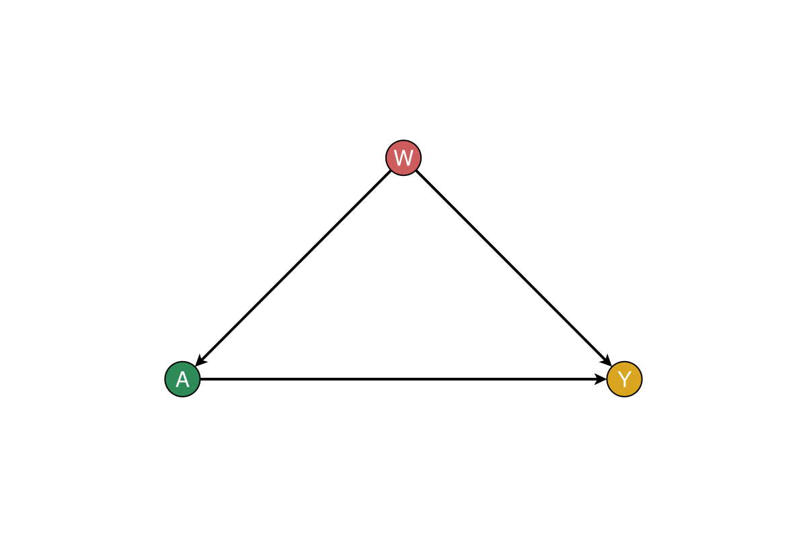
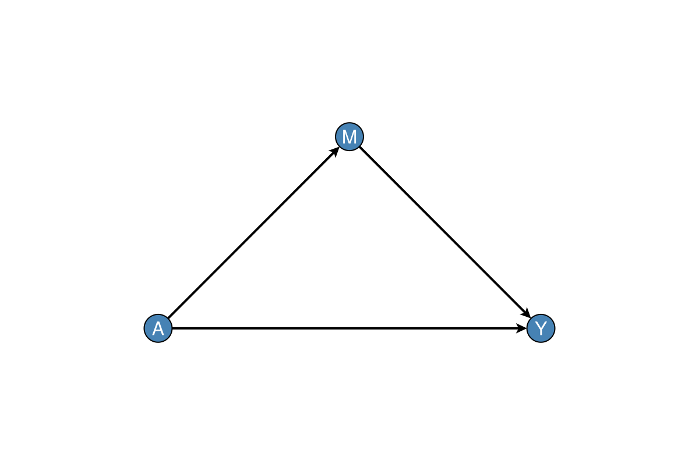

Methods and literature
This page maps CausalTargeted APIs to the papers and books that define the estimands, identification conditions, and estimators. The implementations are Julia-native analogues of ideas developed in the LMTP / mediation literature (including the R lmtp and crumble packages); they are not line-for-line ports. Full bibliographic entries (with DOIs) are in References. Keys such as diaz2023lmtp match references.bib in the CDCS book. Engine naming (:lmtp / :mediation, not “crumble”) is summarised in NAMING.md.
Modified treatment policies and LMTP
Scientific problem. Deterministic interventions that set a continuous exposure to a fixed value are often scientifically uninteresting and exacerbate positivity violations. Modified treatment policies (MTPs) shift or otherwise transform the natural value of treatment (e.g. raise exposure by one standard deviation, subject to clamps).
| Topic | Primary sources | CausalTargeted surface |
|---|---|---|
| Stochastic / population interventions | Díaz & van der Laan (2012), Biometrics | ShiftPolicy, additive / multiplicative / threshold policies |
| Longitudinal MTPs (LMTP): ID, EIF, TMLE & sequential DR | Díaz, Williams, Hoffman & Schenck (2023), JASA | run_lmtp_grid, lmtp_tmle_contrast, LongitudinalPolicy |
| Software reference (R) | Williams & Díaz (2023), Observational Studies | Conceptual parity, not API identity |
| Survival / competing risks LMTP (future scope) | Díaz, Hoffman & Hejazi (2024), Lifetime Data Analysis | Documented as out of scope for now |
Point-treatment continuous MTP. run_lmtp_grid estimates a δ-indexed curve under a user-chosen ShiftPolicy, with cross-fitted outcome and treatment nuisances and optional TMLE fluctuation. Density-ratio options (gaussian, classification, hybrid) implement practical continuous-exposure clever covariates in the spirit of the LMTP literature.
The identifying DAG for the linear synthetic DGP (simulate_linear_mtp) is baseline confounding of a continuous exposure:
using CausalDynamics, Graphs, DAGMakie, CairoMakie
g = DiGraph(3)
add_edge!(g, 1, 2) # W → A
add_edge!(g, 1, 3) # W → Y
add_edge!(g, 2, 3) # A → Y
fig = plot_with_adjustment_set(g, 2, 3, [1]; node_labels = ["W", "A", "Y"])
fig
Sequential / multi-time LMTP. SequentialPolicy / run_sequential_lmtp implement a practical recursive outcome regression with a last-time TMLE-style correction, following the sequential identification strategy of Díaz et al. (2023). Pair with CausalDynamics TemporalEffectQuery + unroll_temporal_dag → identify → sequential_identification_certificate so estimation carries an explicit ID certificate.
Targeted learning, Super Learner, and cross-fitting
| Topic | Primary sources | CausalTargeted surface |
|---|---|---|
| TMLE | van der Laan & Rubin (2006); van der Laan & Rose (2011, 2018) | estimator=:tmle, fluctuation helpers |
| Super Learner | van der Laan, Polley & Hubbard (2007) | DEFAULT_SL_LEARNERS, RICH_SL_LEARNERS, SMALL_N_SL_LEARNERS, fit_super_learner |
| Optional MLJ linear nuisances | MLJ / MLJLinearModels (weakdep) | :mlj_ridge, :mlj_lasso, :mlj_elasticnet, :mlj_logistic after using MLJ, MLJLinearModels (features standardised; never in small-n presets) |
| Optional neural nuisances | MLJFlux (Flux) | :mlj_mlp, :mlj_nn_binary after using MLJFlux — never in small-n presets |
| Cross-fitting / sample splitting | Zheng & van der Laan (2011); Chernozhukov et al. (2018) | crossfit_indices, fold caches |
| Applied TMLE overview | Schuler & Rose (2017) | Pedagogical pointer |
At small n***, rich libraries overfit. recommend_run_options / adaptive_learners prefer lean GLM/mean stacks when n < 80, consistent with the Super Learner principle that the library must be *estimable at the sample size at hand. Optional MLJ / MLP candidates are **opt-in: they can improve recovery on some DGPs in a single synthetic draw while diluting others (overfitting vs generalisation). Prefer repeated Monte Carlo and library ablations before changing defaults.
Interventional mediation grids
Natural direct/indirect effects (Pearl, 2001; Robins & Greenland, 1992; VanderWeele, 2015) require cross-world assumptions that fail under intermediate confounding. Interventional (randomised interventional) effects (Vansteelandt & Daniel, 2017) and stochastic intervention mediation (Díaz & Hejazi, 2020; Hejazi et al., 2023) weaken those assumptions. Liu, Williams, Rudolph & Díaz (2024) unify modern mediation estimands with MTPs; the R package crumble (Liu et al., 2025 tutorial) is a software companion—Julia APIs use mediation names (run_mediation_grid, engine :mediation), with run_crumble_* / :crumble as legacy aliases.
| Topic | Primary sources | CausalTargeted surface |
|---|---|---|
| Stochastic mediation (in)direct effects | Díaz & Hejazi (2020), JRSS-B | Conceptual basis for continuous-A mediation |
| Stochastic interventional effects with intermediate confounding | Hejazi et al. (2023), Biostatistics | Design target for robust mediation contrasts |
| Unified targeted mediation + MTP | Liu et al. (2024), arXiv:2408.14620 | run_mediation_grid, MediationContrast |
| Tutorial / R package companion | Liu et al. (2025), arXiv:2604.09902 | Estimand catalogue; cite, do not brand Julia after “crumble” |
| Classical mediation textbook | VanderWeele (2015) | Interpreting NDE/NIE vs interventional contrasts |
Implementation note. run_mediation_grid estimates TE / NDE / NIE under continuous MTP shifts via nested Monte Carlo and cross-fitted nuisances. Nested-MC variability is first-class: mediation_n_mc_sweep and mediation_stability_summary quantify SE and sign stability across n_mc (essential at small n).
A minimal mediation DAG (A → M → Y, A → Y) for interpreting those contrasts:
using DAGMakie, CairoMakie
fig, _ax, _p = dagplot_mediation(["A", "M", "Y"])
fig
Fold/δ cache. build_mediation_fold_cache (and the LMTP analogue) reuse outcome / mediator / exposure fits across δ within folds—same statistical estimand, lower wall time.
Positivity and support
Positivity (overlap) is necessary for identification of interventional means (Hernán & Robins, 2020; Petersen et al., 2012). MTPs are often designed so that shifted exposures remain in the support of the observed treatment law (Díaz et al., 2023).
| Topic | Primary sources | CausalTargeted surface |
|---|---|---|
| Diagnosing positivity violations | Petersen et al. (2012) | positivity_report, positivity_markdown |
| Clamp / support diagnostics under additive shifts | LMTP practice (Díaz et al., 2023) | support / clamp helpers in mtp_common.jl; grid positivity=true |
Sensitivity to unmeasured confounding
Even with correct adjustment sets, estimates can tip under omitted confounding. CausalTargeted exposes diagnostic tipping-point and partial-R² calibrations inspired by Cinelli & Hazlett (2020); complementary classical tools include VanderWeele & Ding (2017) E-values and Rosenbaum (2002) sensitivity models.
| Topic | Primary sources | CausalTargeted surface |
|---|---|---|
| Partial R² / robustness-value style OVB | Cinelli & Hazlett (2020), JRSS-B | partial_r2_calibration, sensitivity_report |
| E-value | VanderWeele & Ding (2017) | Cite for reporting; not duplicated here |
| Discovery as sensitivity, not oracle | Pearl (2009); Spirtes et al. (2000) | discovery_adjustment_sensitivity, merge_discovery_sensitivity! |
Never silently replace a user DAG with a discovery graph in production defaults.
Identification certificates (CausalDynamics bridge)
Estimation attaches provenance via identification_certificate / attach_run_metadata!. Upstream ID uses Pearl’s do-calculus toolkit (Pearl, 2009; Shpitser & Pearl, 2006) and g-methods (Robins, 1986; Robins, 2000). Time-indexed queries use TemporalDAGSpec / unroll_temporal_dag / TemporalEffectQuery in CausalDynamics (see that package’s References).
Small-n profile
Conservation biology, ecology, and early trials often have tens to low hundreds of units. recommend_folds, SMALL_N_SL_LEARNERS, and recommend_run_options encode memory-safe, positivity-aware defaults (parallel=false, higher mediation n_mc when n is small). See the Small-n checklist.
What we deliberately do not claim
- Full parity with every option in R
lmtp/crumble(GPU Riesz nets, all mediation estimand flavours, survival LMTP). - That tipping-point / partial-R² helpers replace design-based identification.
- That Super Learner at n ≈ 30 recovers oracle rates—diagnostics exist precisely because they often do not.